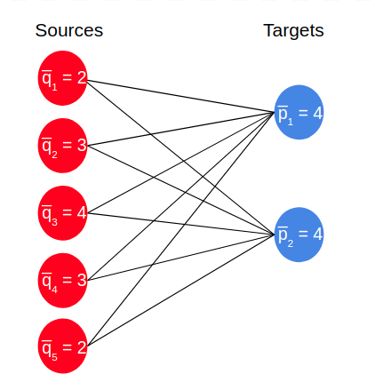
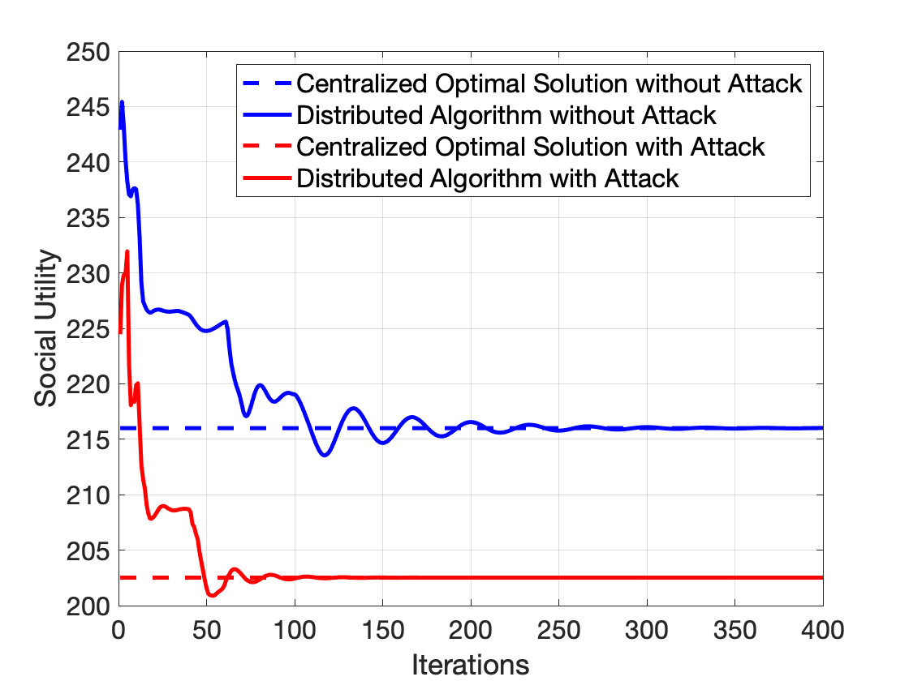
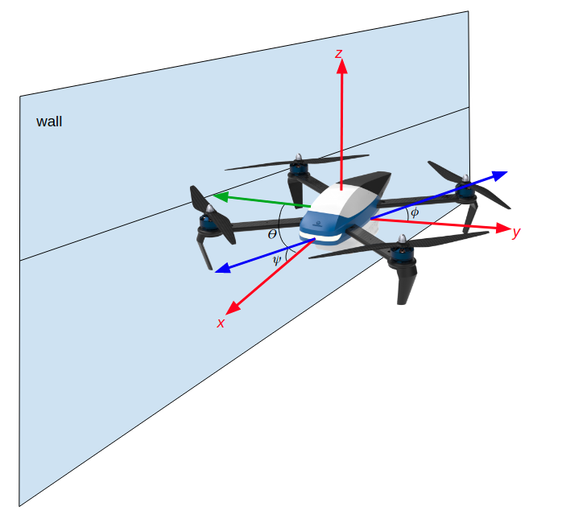
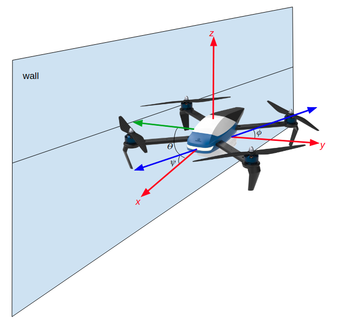

Some of the government funded projects I work on involve the deveoplement of autonomous flight methods for specific applications. I also contribute to West Point's efforts in the DCIST project.
I'm currenlty developing a deep learning model for the predict the position of a quadcopter when GPS and VIO are not viable options.
I advise the computer vision team where we look at solving complicated object detection problems.
2. Dr. Juntao Chen Research Group
 
As a graduate student I conducted research in the Juntao Chen Research Group in Fordham University's Computer and Information Science Department. In this group we first applied a fairness metric to distributed discrete optimal transport for so a more fair resource Allocation scheme could be computed. We then constructed a discrete distriubted OT algorithm that considers the possibility that nodes could be compromised and misrepresent their constraints to the other nodes in the network. Next, we incorporated differential privacy into the distributed OT paradigm. Since nodes broadcast their information to other nodes, that could be used to trace back sensitive data. Finally, we considered developed an algorithm for the security investment problem from multiple sources to multiple targets. I also advised undergraduateson the application of distibuted OT to secuirty investment applications. Finally, we considered the application of a fair and optimal allocation of covid-19 vaccine.
1. Fordham University Robotics and Computer Vision Lab
 

I started out working in the Robotics and Computer Vision lab as a research assistant helping a master's student with his work on drone to drone wind detection. We gathered IMU data from one drone flying underneath another. The data from the drone underneath as well as control data was then fed the data to a classification program to see if the computer could predict when a drone was overhead after it trained on the data.
I took over as the lead researcher on the next portion of the project, looking at if data gathered from the drone's IMU when it is flying near walls could be used to predict the presence of a wall in a flight path. To do this we gathered data from the drone when it was flying with a wall to its left, right and front. Then I built a classifier and feature generator for the computer to train and test on with the data.
We found that when using a RandomForest classifier, we can accurately predict which side a wall is on in relation to the drone with above 90% accuracy. This means this could be a potential replacement for more power-hungry radar and camera sensors when building autonomous drones.